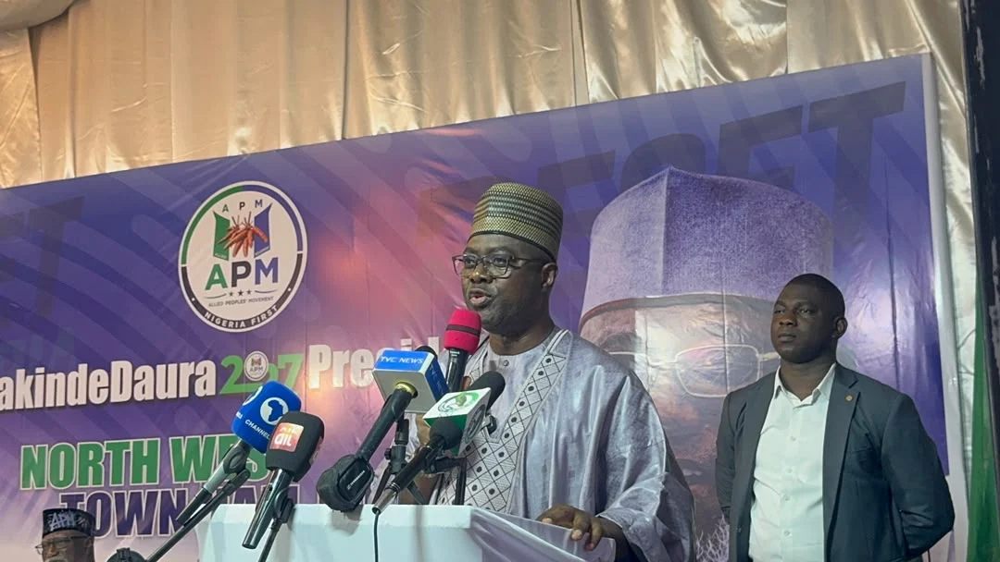

Security & Crime · 22 Sep 2026
Federal Government Suspends 20 NSCDC Officers Over 37 Miners' Deaths as Makinde Demands State Control

The Federal Government has suspended 20 Nigeria Security and Civil Defence Corps officers alongside the Niger State Commandant following the deaths of 37 suspected illegal miners in custody, prompting Oyo State Governor Seyi Makinde to renew calls for states to control mining operations.
The Federal Government has suspended 20 officers of the Nigeria Security and Civil Defence Corps (NSCDC), including the Niger State Commandant, following the deaths of 37 suspected illegal miners held in the Corps' custody. The development has triggered broader political discussions, with Oyo State Governor Seyi Makinde renewing calls for states to assume greater control over mining operations.
Suspensions and Federal Investigation
The interior ministry announced the disciplinary actions following the incident, which occurred on Thursday, September 17, 2026. Minister of Interior Olubunmi Tunji Ojo constituted a 10-member independent investigative committee following a directive from President Bola Tinubu.
The suspended personnel include the Niger State Commandant, Suberu Aniviye, alongside 20 other officers involved in various operational duties such as station guarding, arrests, investigations, intelligence, legal services, and guard duties. The panel is tasked with establishing the identities of the deceased, uncovering the circumstances of their arrest and detention, determining the cause of death, and investigating potential complicity, negligence, or misconduct.
The committee is chaired by retired Department of State Services Deputy Director General Jonathan Kure, with former Nigerian Law School Director General Prof. Isa Hayatu Chiroma serving as secretary. Other members include retired AIG Hosea Hassan Karma, Prof. Olayinka Buhari, representatives of the Minna Emirate Council and the Niger State Government, Miners Association of Nigeria National Secretary Liman Sulaiman, human rights lawyer Deji Adeyanju, journalist Zainab Suleiman Okino, and public affairs analyst George Agbakahi. The panel has been given a two-week window to submit its report.
Governor Makinde Demands State Control Over Mining
Reacting to the tragedy during a presidential town hall meeting in Katsina, Oyo State Governor Seyi Makinde argued that state governments would manage the solid minerals sector more effectively if given constitutional authority (The Punch). Makinde noted that mining currently sits on the Exclusive Legislative List and proposed devolving responsibility to the states while maintaining federal oversight.
Referring to the 37 individuals who died in custody, Makinde emphasized that the victims were young citizens seeking survival. He also touched upon broader governance issues, stressing the importance of constitutional adherence and outlining reform proposals ahead of the political cycle.
Sources
This article was produced by the C. O. Eric AI Newsroom from the cited sources. It is published only after automated evidence and safety checks.